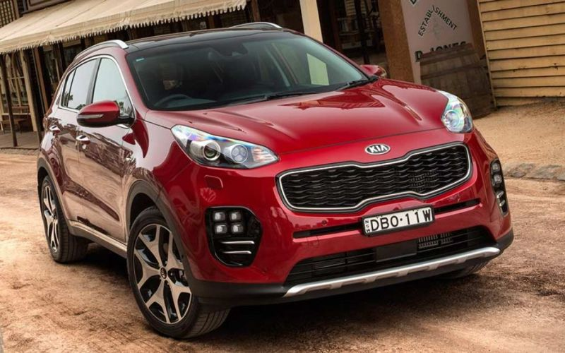
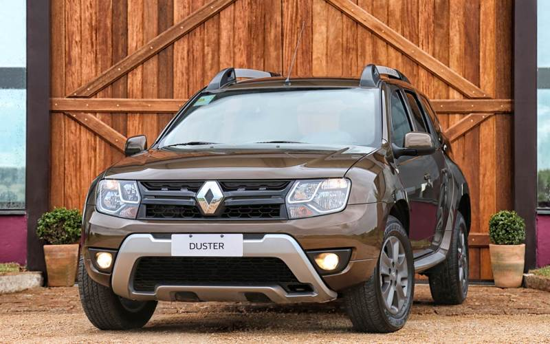
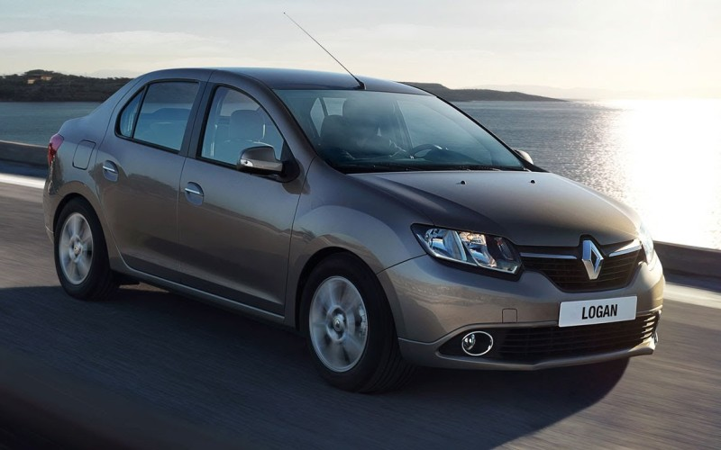

Most popular auto in 2018
1. Kia Sportage
Самые популярные авто в Украине 2018
2. Renault Duster
Самые популярные авто в Украине 2018
Renault Logan
Самые популярные авто в Украине 2018
| Автомобілі віком 6-7 років | Поломки | Автомобілі віком 8-9 років | Поломки |
|---|---|---|---|
| Mazda3 | 6,8% | Porsche 911 Carrera | 9,9% |
| Porsche 911 Carrera | 7,4% | Audi TT | 11,5% |
| Audi TT | 7,7% | Mazda 2 | 12,4% |
| BMW X1 | 8,0% | Mercedes Benz SLK-Class | 12,8% |
| Toyota Avensis | 8,1% | Toyota Auris | 12,9% |
| Audi Q5 | 8,8% | Volkswagen Golf Plus | 13,0% |
| Volkswagen Golf Plus | 8,8% | Toyota Corolla Verso | 13,2% |
| Mercedes Benz GLK-Class | 8,9% | Toyota Yaris | 14,5% |
| Toyota Yaris | 9,8% | Mercedes Benz C-Class | 14,7% |
| Mercedes Benz E-Class | 10,1% | Mini | 14,9% |
Lists Top Car 2018
- KIA Sportage
- Renault Logan
- Toyota RAV-4
- Renault Duster
- Toyota Corolla
- Hyundai Tucson
- Ravon R2
- Nissan Qashqai